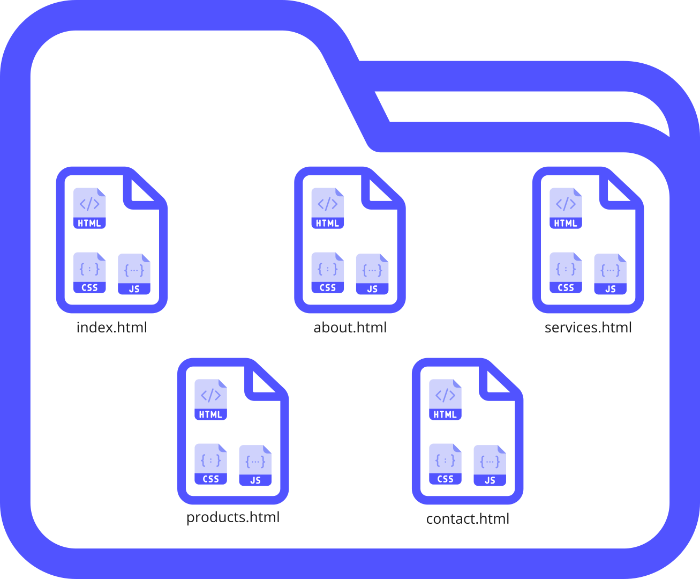
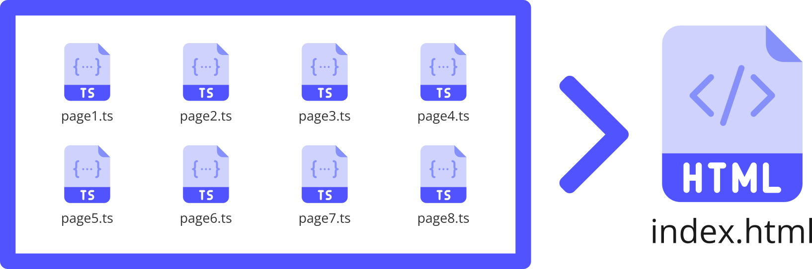

Introduction Last updated: 2024-08-29
- Our journey begins with Web Application Architecture, where we explore the layers, data sources, and API approaches that underpin modern web apps.
- The fundamental technologies of web development:
- HTML (HyperText Markup Language) serves as the backbone of web content, providing structure and semantics to your web pages through elements and attributes.
- CSS (Cascading Style Sheets) transforms the visual presentation of web pages, handling layout, design, animations, and responsive behaviors across different devices.
- JavaScript brings interactivity and dynamic functionality to web pages, enabling real-time updates, user interactions, and complex application logic.
- Next, we delve into the Evolution of Web Applications, tracing their path from Multi-Page Applications (MPAs) to the advent of Single Page Applications (SPAs).
- Advanced development tools and technologies:
- TypeScript, with its static typing and expressive features, enhances JavaScript development and provides better tooling support.
- Node.js revolutionized server-side programming, enabling JavaScript beyond the browser.
- Finally, we introduce Next.js, a React-based framework that marries Progressive Enhancement principles with SPAs.
- This dynamic landscape focuses on:
- Robustness
- Performance
- Accessibility
üåêüöÄ
Web Application Architecture
Web application architecture refers to the high-level structure and components that make up a web-based software system. It encompasses various layers, each with specific responsibilities.
Here's a breakdown of the key components:
-
Data Sources:
Web applications rely on data, which can come from various sources:
- Relational Databases (RDBMS): Structured data stored in tables with predefined schemas (e.g., MySQL, PostgreSQL).
- NoSQL Databases: Non-relational databases that handle unstructured or semi-structured data (e.g., MongoDB, Cassandra).
- Big Data Stores: For managing large-scale data (e.g., Hadoop, Apache Spark).
- Flat Files: Simple text files (e.g., CSV, JSON) containing data.
- External APIs: Data accessed from third-party services via APIs.
-
API Layer/Server:
The API layer acts as an intermediary between the data sources and the client applications. The following are the responsibilities of the API Layer:
- Data Retrieval: Fetching data from databases, APIs, or other sources.
- Data Transformation: Converting data into a format suitable for consumption (e.g., JSON).
- Business Logic: Implementing application-specific rules and logic.
- Authentication and Authorization: Ensuring secure access to data.
- Error Handling: Managing exceptions and providing meaningful responses.
The API layer exposes endpoints (URLs) that clients can use to interact with the system.
-
Client Applications:
Web applications can be accessed through various client interfaces:
- Web Browsers: Users interact with web applications via browsers (e.g., Chrome, Firefox).
- Single-Page Applications (SPAs): Built using frameworks like Angular, React, Vue, or Svelte. SPAs load once and dynamically update content without full page reloads.
- Mobile Apps: Native (iOS/Android) or hybrid apps (built using frameworks like React Native).
- Authentication and Authorization: Ensuring secure access to data.
- Other APIs: Machine-to-machine communication (e.g., microservices communicating via RESTful APIs).
-
API Responses:
- JSON (JavaScript Object Notation): Lightweight, human-readable data interchange format.
- Plain Text: Error messages, logs, or other relevant information.
- HTML: Used for rendering web pages directly within a client's browser.
- XML: Less common but still used for structured data.
- Binary Data: Images, audio files, PDFs, etc.
- Custom Formats: Application-specific response formats.
In summary, web application architecture involves data retrieval, transformation, and communication via APIs. Whether it's a web app, mobile app, or another API, the API layer plays a crucial role in delivering data to clients.
Understanding this architecture is essential for building robust and scalable web applications. üåêüöÄ
The Evolution of Web Applications
The evolution of web applications has been a fascinating journey, shaped by technological advancements and changing user expectations. Let's explore the different stages:
-
Multi-page Applications (MPAs)
In the early days of the internet, Multi-page Applications (MPAs) were the prevailing model. These applications followed a simple principle: every user action that required a server update or resulted in a view change triggered a full page reload. Each interaction meant fetching an entirely new HTML page from the server. While this approach worked well for simpler websites, it had limitations:
- Bottleneck: Frequent round-trips to the server led to slower interactions and less-than-optimal user experiences.
- Complexity: As websites grew more complex, managing multiple pages became challenging.
-
Progressively Enhanced Multi-page Applications (PEMPAs):
To address these limitations, developers embraced Progressive Enhancement. PEMPAs took a pragmatic approach:
- Core Functionality for All: They started with a basic version of the website that all browsers could render. This ensured that all users, regardless of their browser capabilities, received essential content.
- Layered Enhancements: Advanced features were added progressively. Browsers that supported JavaScript and modern features received additional enhancements.
- Responsive and Inclusive: PEMPAs provided a more interactive and responsive experience without leaving behind users with older browsers.
 -
Single Page Applications (SPAs):
As web technologies evolved, Single Page Applications (SPAs) emerged. SPAs revolutionized the user experience:
- Dynamic Content: SPAs load a single HTML page initially and then dynamically update content on the client side as users interact with the app.
- Smooth Interactions: No full page reloads during user interactions, resulting in a more app-like feel.
- JavaScript Power: Leveraged advancements in JavaScript and AJAX for dynamic content replacement.
However, SPAs introduced challenges:
- SEO Difficulties: Search engine optimization (SEO) suffered due to reliance on JavaScript.
- Performance Concerns: Heavy reliance on client-side rendering impacted initial load times.
- Accessibility Considerations: Ensuring accessibility for all users remained crucial.
 -
Enter Progressively Enhanced Single Page Applications (PESPAs):
PESPAs combine the best of both worlds:
-
Improved Performance:
- Render the initial view on the server-side or generate it at build time.
- Fast initial load, especially beneficial for users on slower networks or devices.
-
Enhanced SEO:
- Deliver fully rendered HTML to the browser.
- Content easily discoverable by search engine crawlers.
-
Greater Accessibility:
- Core functionality accessible to all users, regardless of browser capabilities or network conditions.
- A more inclusive web experience.
-
Resilience:
- If enhancements fail to load, users can still interact with the core functionality.
- Robustness against failures.
-
Better User Experience:
- Immediate feedback with a fully rendered page.
- Additional interactivity and functionality layered on top as enhancements load.
-
Improved Performance:
In summary, PESPAs strike a balance between interactivity, robustness, and accessibility, ensuring a delightful web experience for all. üåêüöÄ
SPA MPA Lifecycle
The below image shows the lifecycle of a page in both the cases of MPAs and SPAs
Introduction to HTML
HTML stands for Hyper Text Markup Language. It is the standard markup language for creating web pages.
HTML describes the structure of a web page and consists of a series of elements. These elements tell the browser how to display the content.
HTML elements label pieces of content such as "this is a heading", "this is a paragraph", "this is a link", etc.
Introduction to CSS
CSS stands for Cascading Style Sheets.
CSS describes how HTML elements are to be displayed on screen, paper, or in other media
CSS saves a lot of work. It can control the layout of multiple web pages all at once
External stylesheets are stored in CSS files
Introduction to Tailwind CSS
Tailwind CSS is a utility-first CSS framework that enables rapid UI development through pre-built classes.
Key Features:
- Utility Classes: Small, single-purpose classes that can be combined
- Responsive Design: Built-in responsive modifiers
- Customization: Highly configurable design system
Benefits of Tailwind CSS:
- Faster development with pre-built utilities
- Consistent spacing and sizing
- Reduced CSS bundle size through PurgeCSS
- Maintainable and scalable styling approach
Introduction to JavaScript
JavaScript is a versatile programming language that adds interactivity and dynamic behavior to web pages.
Core Concepts:
- DOM Manipulation: Modifying HTML elements dynamically
- Event Handling: Responding to user interactions
- Asynchronous Programming: Handling operations that take time
Our page uses JavaScript for:
- Smooth scrolling navigation
- Code syntax highlighting
- Interactive sidebar toggling
- Dynamic content loading
Inline Javascript
Javascript enclosed in a script tag
Advent of Typescript
- TypeScript is a free and open-source high-level programming language developed by Microsoft which is a superscript of JavaScript
- It adds static typing with optional type annotations to JavaScript.
- TypeScript is designed for large applications and transpiles to JavaScript.
Reasons for TypeScript Invention
-
JavaScript Limitations:
- JavaScript, while powerful, had limitations for large-scale applications.
- TypeScript aimed to address these limitations and enhance the development process.
-
Static Typing:
- TypeScript introduced optional static typing.
- Developers could catch type-related errors early during development.
- This improved code reliability and stability.
Advent of Node.js
Introduction to Node.js
- Node.js emerged as a solution to streamline the execution of JavaScript code beyond web browsers.
- It provides a runtime environment for JavaScript, allowing developers to run code on the server side.
- Node.js is built on Chrome's V8 JavaScript engine, making it fast and efficient.
Reasons for Node.js Invention
-
Handling Concurrent Connections:
- Apache HTTP Server had limitations in handling many concurrent connections (10,000+).
- Node.js addressed this by using an event-driven architecture capable of asynchronous I/O.
- It optimized throughput and scalability for web applications with numerous I/O operations.
-
Blocking and Sequential Programming:
- Traditional server-side programming followed a sequential model.
- Node.js introduced non-blocking I/O, preventing processes from blocking each other.
- It allowed handling multiple connections without creating separate execution stacks.
Impact on API Development Landscape
-
Unified Language: Node.js enabled "JavaScript everywhere."
- Developers could use the same language (JavaScript) for both server-side and client-side programming.
- No need to switch between different languages or frameworks.
-
Expressive APIs:
- Node.js, combined with Express (a minimalistic web application framework), simplified API development.
- Express provided features and middleware for creating flexible and customizable APIs.
- Developers could build RESTful APIs efficiently using JavaScript.

-
Performance and Scalability:
- Node.js leveraged V8s performance, making APIs fast and responsive.
- Its event-driven model optimized throughput for real-time applications.
- Scalability was achievable due to non-blocking I/O.
-
npm Ecosystem:
- npm (Node Package Manager) facilitated package management.
- Developers could publish, share, and install Node.js packages easily.
- The ecosystem grew rapidly, enhancing API development.
npm install <package name>
In summary, Node.js revolutionized API development by unifying JavaScript, improving performance, and simplifying server-side programming. It remains a popular choice for building robust APIs. üåêüöÄ
Introduction to React.js
How does React Work?
React creates a VIRTUAL DOM in memory.
Instead of manipulating the browser's DOM directly, React creates a virtual DOM in memory, where it does all the necessary manipulating, before making the changes in the browser DOM.
React only changes what needs to be changed!
React finds out what changes have been made, and changes only what needs to be changed.
You will learn the various aspects of how React does this in the rest of this tutorial.
Introduction to Next.js
Next.js, a React-based framework, bridges the gap between PE and SPAs. It achieves this by offering features like:
-
Server-Side Rendering (SSR):
- SSR generates full HTML on the server for each request.
- Users receive a fully rendered page even before JavaScript loads.
- Improves performance, especially on slower networks, and aids SEO.

-
Static Site Generation (SSG):
- SSG generates HTML at build time, serving static files via CDNs.
- Excellent performance and scalability.
- Incremental Static Regeneration (ISR) updates static content without full rebuilds.
-
Client-Side Rendering (CSR):
- Next.js "hydrates" server-rendered or statically generated pages with client-side JavaScript.
- Subsequent interactions are handled entirely on the client side.
- Provides a smooth, app-like user experience.

-
API Routes:
- Easily create server-side API endpoints within Next.js.
- Interact with server-side data, enhancing your application's capabilities.
-
Extra:
Learn more about SSR, CSR, SSG and ISR here